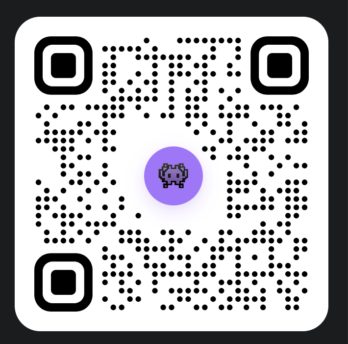

what's the deal with ZIP?
It's been compressing files the same way since 1989. Thirty-six years. Not one new idea. We made something. It's better. You're welcome.
You ever watch someone refactor for four hours, and then Claude just... forgets? Like you just explained the whole plan, touched 30 files, and now it's looking at you like you're a stranger at a party. "What files did we change?" Brother, ALL of them.
So your choices are: summarize and pray, or carry 200K tokens around like a guy who brings his own chair to a restaurant. Both of these are embarrassing and I refuse to participate.
And ZIP? ZIP's been doing the same thing since George H.W. Bush was president. It compresses each file by itself. Doesn't look at the other files. Doesn't care. ZIP is the guy at the group project who does his slide and leaves the call.
So we taught compression to read. Revolutionary, I know.
Ok jokes aside. 79-file real project. Reproducible. This is the PACT repo compressing itself. We didn't even pick a good example, this IS the example.
The technical explanation is straightforward: PACT uses brotli solid archiving — all files concatenated into a single compression stream. Cross-file patterns (shared import headers, structural boilerplate, repeated identifiers) are deduplicated at the algorithm level. ZIP's per-file deflate cannot observe inter-file redundancy. The delta is architectural, not heuristic.
1,001 KB reduced to 221 KB. Files are sorted by extension prior to concatenation, maximizing sliding window utilization across structurally similar content. Brotli quality 11 with solid stream encoding.
Zero external dependencies. Brotli is provided by Node.js core (node:zlib). The compression engine is 250 lines of TypeScript with no native addons or WASM. Entire surface area is auditable in one sitting.
unzip -l gives you filenames like a valet handing you someone else's keys. pact inspect tells you every function, every import, every class — without decompressing. It's like having x-ray vision except it's useful and you don't get arrested.
$ pact inspect src.pact PACT v3 archive 4.2x src 88.3 KB -> 15.8 KB saved 82% txt cli.ts 13.5 KB txt compress.ts 5.9 KB txt engine.test.ts 28.8 KB txt extract.ts 632 B txt hook.ts 1.4 KB txt install.ts 10.4 KB txt pack.ts 15.8 KB txt rehydrate.ts 911 B 15 files 88.3 KB -> 15.8 KB solid brotli 4.2x
# compress any file or folder pact pack myproject/ # decompress pact unpack myproject.pact # inspect without decompressing pact inspect myproject.pact
# binary + Quick Actions + native UI bash installers/macos/install.sh Pack with PACT Unpack PACT Inspect PACT
200KB native Swift binary. Not Electron. We don't need 300MB of Chromium to show you a progress bar. We have self-respect.
Look, /compact tries really hard. It's like watching your little cousin play basketball. Supportive energy. But someone has to say it.
12 real Claude Code sessions. Measured, not estimated. Reproducible on any machine with Node.js. The following data is not a suggestion, it's a receipt.
$ node benchmarks/compaction-benchmark.mjs
| Strategy | Tokens | Ratio | Retention | Lossy? |
|---|---|---|---|---|
| Baseline (full context) | 29,611 | 1.0x | 100% | — |
| PACT | 1,606 | 18.4x | 92% | no |
| /compact (summarization) | 7,483 | 4.0x | 68% | YES |
| Sliding window (last 5) | 3,326 | 8.9x | 60% | YES |
INFORMATION RETENTION BY CATEGORY
[1] I read the task description and started...
[2] Started implementing cookie utilities...
[3] Refactored the generateToken function...
[4] Updated auth middleware to read from...
[5] Ran npm install cookie-parser...
// goal? unknown
// file status? unknown
// constraints? unknown
// what's left to do? unknown
A LinkedIn post about your codebase. The AI knows something happened — vibes were had, code was written, someone said "refactor." Ask it which files are done and it'll give you the confidence of a guy who definitely didn't study but is absolutely going to wing it.
session = {
goal: 'jwt-to-cookies'
files: {
'src/auth/jwt.ts': 'done'
'src/middleware/auth.ts': 'done'
'src/utils/cookies.ts': 'new'
}
plan_done: ['create-cookie-util']
plan_next: ['update-middleware']
constraints: ['httponly' 'secure']
entities: {
'generateToken': 'done'
}
}
. sjson(session)
An actual data structure. Goal, files with status codes, plan steps, constraints, entities — all addressable, all queryable, all correct. The AI doesn't need to guess because guessing is for /compact users.
$ pact install --global PACT compaction installed globally Hook: ~/.pact/compaction-hook.mjs Settings: ~/.claude/settings.json Every Claude Code session now auto-compresses at 50% context. Zero API calls. Heuristic extraction. Lossless.
None. Zero. Nada. It's regex-based heuristic extraction running locally. Charging you an API call to compress your own context would be like charging you to fold your own laundry. We thought about it for zero seconds.
Fires at 50% context usage. The model doesn't notice. You don't notice. Nobody gets interrupted. Nobody types /compact like an animal. It just happens. Compression that respects your time. Imagine.
Files on disk
|
v
[collect + sort by extension]
|
v
[extract semantic summary per text file]
functions, imports, classes, types
stored UNCOMPRESSED in manifest
|
v
[concatenate all raw file bytes]
similar files adjacent for window hits
|
v
[brotli quality 11 -- single solid stream]
cross-file patterns visible to compressor
|
v
.pact container
PACT magic + version + manifest + payload
PACT compressed the Claude Code session that built PACT. The tool ate its own birth certificate and came out 34x lighter. This is either genius or a cry for help. We honestly can't tell anymore and at this point we're too afraid to ask.
# reproduce it. right now. on your machine. node benchmarks/run.mjs --tasks 012-barutu-snake
no asterisks. no "up to." no "in ideal conditions." no "results may vary." run it. we'll wait. bring snacks.
Built in 5 days on API credits. Every sat goes to compute — more benchmarks, more platforms, more compression research.

0xeC68...370b
ETH / Base / any EVM chain